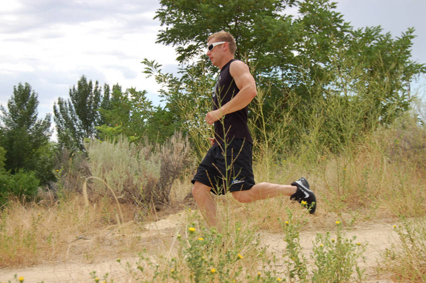

- Running or hiking on trails will get the blood pumping and heart beating almost immediately. Make sure you have good shoes. While you use the muscles in your calves and buttocks to pull yourself up a hill, the knees, joints and ankles absorb the bulk of the pounding coming back down. Take smaller steps as you walk downhill, keep your knees bent to reduce the impact and slow down to avoid falling.
- A 150 lb person can burn over 200 calories for 30 minutes walking uphill, compared to 175 on a flat surface. If running the trail, a 150 lb person can burn well over 500 calories in 30 minutes.
This exercise appears in Programmd training programs. Take the quiz to find one for your gym.
Find your program